This page brings together basic information about the Arabic script and its use for the Urdu language. It aims to provide a brief, descriptive summary of the modern, printed orthography and typographic features, and to advise how to write Urdu using Unicode.
Select part of this sample text to show a list of characters, with links to more details.
Change size: 28px
دفعہ ۱۔
تمام انسان آزاد اور حقوق و عزت کے اعتبار سے برابر پیدا ہوئے ہیں۔ انہیں ضمیر اور عقل ودیعت ہوئی ہے۔ اس لئے انہیں ایک دوسرے کے ساتھ بھائی چارے کا سلوک کرنا چاہیئے۔
دفعہ ۲۔
ہر شخص ان تمام آزادیوں اور حقوق کا مستحق ہے جو اس اعلان میں بیان کئے گئے ہیں، اور اس حق پر نسل، رنگ، جنس، زبان، مذہب اور سیاسی تفریق کا یا کسی قسم کے عقیدے، قوم، معاشرے، دولت یا خاندانی حیثیت وغیرہ کا کوئی اثر نہ پڑے گا۔
اس کے علاوہ جس علاقے یا ملک سے جو شخص تعلق رکھتا ہے اس کی سیاسی کیفیت دائرہ اختیار یا بین الاقوامی حیثیت کی بنا پر اس سے کوئی امتیازی سلوک نہیں کیا جائے گا۔ چاہے وہ ملک یا علاقہ آزاد ہو یا تولیتی ہو یا غیر مختار ہو یا سیاسی اقتدار کے لحاظ سے کسی دوسری بندش کا پابند ہو۔
The Urdu alphabet, in the nastaliq style, is used to write the Urdu language, spoken in Pakistan and India.
اُردُو حُرُوفِ تَہَجِّی
The orthography is a modification of Perso-Arabic, which derives from the Arabic alphabet with additions for Indo-European pronunciation. After the Mughal conquest, Nasta'liq became the preferred writing style for Urdu. It is the dominant style in Pakistan, and many Urdu writers elsewhere in the world use it.
Urdu uses the Arabic script, with extensions to covers its much wider repertoire of sounds. A number of the extensions are based on those developed for Persian (Farsi). The Arabic script is an abjad. See the table to the right for a brief overview of features for the modern Urdu orthography.
Urdu is principally written using the nasta'liq style of Arabic writing. Glyphs are more drawn out, and the baseline tends to be sloping from word to word.
Urdu text runs right-to-left in horizontal lines, but numbers and embedded Latin text are read left-to-right. ❯ direction
The script is cursive, and some basic letter shapes change radically, depending on what they join to. The nastaliq styling creates diagonal baselines between joined characters, and tends to reduce clarity about where one letter ends and the next starts. (The dots and other diacritics associated with letters become particularly useful for the reader.) ❯ cursive
There is no case distinction.
Words are separated by spaces.
Modern Urdu has 39 basic consonant letters and 18 aspirated digraphs in its alphabet to represent native sounds, but tends to spell words loaned from Persian and Arabic using additional characters. Although it is not always easy to guess the vowel sounds in a word, the consonants are largely reliable phonetically. There is mostly a one-to-one correspondance between consonant letters and sounds. Vowels, however, are a different story. ❯ consonants
Urdu is an abjad where long vowel sounds are indicated using letters, but short vowels are not normally written. Given the number of vowel sounds in Urdu compared to the number of letters used, this leads to some ambiguity. If needed, short vowel sounds can be indicated and vowel letters disambiguated using diacritic marks.
The script draws on 5 vowel letters in order to indicate the location of 10 vowel sounds in unvowelled text, but uses an additional 5-10 diacritics when precision is needed. The code points used to represent a given vowel typically differ according to whether it is word-initial, word-medial, word-final, or isolated ❯ vowels
Urdu uses a hamza diacritic and other diacritics and letters in a somewhat complicated pattern to indicate vowels that follow another vowel without an intervening consonant, and to represent the izafat conjunction. The choice between precomposed and decomposed realisations of characters used for these features is also complicated. ❯ hamza
Nasalisation is indicated by a special letter in word-final position, but by a normal n-letter word-medially, although sometimes this has an additional diacritic.❯ nasalisation
A mandatory ligature is used for combinations of lam + alif.
Additional diacritics indicate the absence of a vowel in consonant clusters, and gemination, but are also typically not used. ❯ clusters
Urdu uses native digits, though the code points are different from those used for the Arabic language, and Arabic code points are used for several of the more common punctuation marks. ❯ numbers
Joining forms
Because the Arabic script is 'cursive' (ie. joined-up) writing, letters tend to have different shapes depending on whether they join with adjacent letters or not (see cursive). In addition, vowels can be represented using different characters, depending on where in a word they appear.
In scripts such as Arabic, several characters have no left-joining form. In what follows we'll use the characters ي and د to illustrate shapes. The former can join on both sides, but the latter can only join on the right.
Left-joining glyphs are commonly called initial; dual-joining are called medial; and right-joining are called final. Glyphs that don't join on either side are called isolated. However, these glyph shapes can be found in various places within a single word.
Word-initial characters usually have initial glyph shapes (eg. 064A ). However, characters that only join to the right will use an isolated glyph shape (eg. 062F ).
Furthermore, words beginning with a vowel are always preceded by a vowel carrier, which is normally ا
(eg. 0627 06CC or 0627 064E ).
Word-medial characters will typically join on both sides
(eg. 064A ) but those that only join to the right will use a final glyph (eg. 062F ).
However, if either of those is preceded by another character that only joins to the right, the glyph shapes rendered will be initial (eg. 064A )
and isolated (eg. 062F ), respectively.
Word-final characters will typically use a final glyph shape (eg. 064A and 062F ).
However, if the previous character joins only to the right, they will use isolated glyph shapes (eg.064A and 062F ).
In all this contextual glyph shaping the basic shapes used for a character can vary significantly in a script like Arabic. This also includes some characters that only have ijam dots in certain contexts.
Click on the sounds to reveal locations in this document where they are mentioned.
Phones in a lighter colour are non-native or allophones. Source Wikipedia.
Vowel sounds
There are 10 vowel sounds, though there are also allophonic variants. They are usually grouped into pairs of 'short' and 'long' sounds - although the difference is qualitative, rather than just length. The basic phonemes are as follows:
The phoneme ə is often written a in phonemic transcriptions. Its pronunciation may also be slightly lower as far down as ɐ, so it is shown slightly lower than normal on the chart.
iː and uː in word-final position are typically shortened to i and u,whp,#Vowels eg. شَکتیوَستُو
Where ɦ has inherent vowels on either side, those vowels may become ɛ, eg. کَہنا A similar process occurs for word-final ɦ,whp,#Vowels eg. کَہہ
Urdu, like other Indic languages, has four forms of plosives, illustrated here with the bilabial stop: unvoiced p, voiced b, aspirated pʰ, and murmured bʱ. It also has a set of retroflex consonants.
v and w are allophones of ʋ in Urdu. w typically occurs between a consonant and vowel,whp,#Allophony_of_[v]_and_[w] eg. compare پکوانورت
The following table summarises the main vowel to character assigments. Note that some sounds are distinguished in vowelled text by an absence of diacritics, and that there are two possible alternatives for uː. The table shows short vowel diacritics, but these should be ignored when writing normal text in Urdu. (In some cases, this means that a vowel would not normally be written at all.) The letters ا and و in word-initial position may be replaced by ع in some words.
Each table cell shows word-initial, word-medial, and word-final forms from right to left. The glyphs shown are illustrative; alternative shapes may occur (see joining_forms). Click/tap on items to see a list of the components for that cell.
The vowel letters above all represent the location of long vowel sounds, except that 0627 can also be used to indicate short vowels in word-initial position.
This table shows the characters and their basic mappings to sounds in unvowelled text. (The table should be read right-to-left.)
initial
medial
final
ا
əɪʊ
ا
ɑː
ا
ɑː
آ
ɑː
ایـ
eːiːɛː
ـیـ
eːiːɛː
ـی
iː
ے
eːɛː
او
oːuːɔː
و
oːuːɔː
و
oːuːɔː
The vowels əɪʊ are not marked in medial position, and generally do not occur in final position.
When text is unvowelled (as it usually is), there are only a few ways of writing vowels, and a good deal of ambiguity for the novice reader about which sound is represented by a given letter.
0639 is used in words of Arabic origin. In these words it is typically not pronounced but can support vowels. In this way, at the beginning of a word it can fulfill the same function as the alif, but the spelling can distinguish homophones, eg. compare:
A following ع may also affect a short vowel diacritic to produce a long vowel sound as follows:
ɑː from zabar followed by 'ain, eg. بَعد
eː from zer followed by 'ain, eg. شِعر
oː from peʃ followed by 'ain, eg. شُعلہ
Combining marks used for vowels
In situations where it is necessary to unambiguously indicate the underlying vowel sounds, the following diacritics can be added to base letters. Click on the characters in the boxes for detailed descriptions.
Basic diacritics
ِ␣ُ␣ٗ␣َ
As mentioned earlier, these diacritics are rarely used in Urdu content. They may be used on their own to represent short vowel sounds, or combined with the vowel letters listed above to create other sounds. See how to write the basic vowels in the basicV section.
The short vowels are generally not found in word-final position.
0657 is used to indicate that the vowel is uː or ʊ rather than ɔ. It is not usually needed, and serves only to emphasise that this is a vowel, eg.
ہندو
Hamza
ء␣ٔ␣ئ␣ؤ␣ۂ␣ۓ
A hamzā plays more than one role in Urdu, related to vowels. It is used within a word to separate standalone vowel sounds from a preceding vowel (see standalone). It is also used at the end of a word to express a short ɛ sound between 2 words, which is typically translated 'of' (see izafat).
An isolated form of hamza, ء [U+0621 ARABIC LETTER HAMZA], is occasionally used, but generally hamza is written above a preceding base letter using ٔ [U+0654 ARABIC HAMZA ABOVE] or a precomposed character with a hamza.
A number of precomposed combinations of base letter and hamza are encoded in Unicode. Many of these decompose and recompose under normalisation as canonical alternatives, but a few do not and need to be treated with care. For information about which precomposed characters are used or not used here see hamza_choices.
When represented by a combining character, hamza can also have one of two different shapes, depending on the font used: one like the initial form of 'ain and the other more like an italic 's'.
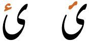
Two alternative shapes of hamza.
Other diacritics
ً␣ٌ␣ٍ␣ٰ␣ٖ␣ٓ
The doubled vowel diacritics, 064B, 064C, and 064D are used at the ends of certain Arabic adverbs in vowelled text. The doubled zabar (fathatan) is the most common of the three marks of this type, and is usually written over an alif, although the vowel sound is short. Examples,
یقیناًمثلاً
0670 is used in a few Arabic words over the final form of 06CC to produce the sound ɑ: eg.
اعلیٰدعویٰ
The similar diacritic 0656 is (rarely) used to indicate that a vowel is iː or i rather than e, eg.
نُحْیٖnuh͓yᵢ
0653 is only found in decomposed text, and is associated only with alef. Usually the atomic character 0622 would be used.
The so-called 'silent' he that appears at the end of many words of Arabic or Persian derivation is pronounced ɑː, مکہ
Standalone vowels
Word-initial
Standalone vowels at the beginning of a word are normally written using, or preceded by 0627. The various forms can be seen in the chart in the section basicV. Basically, in unvowelled text, short vowels are written using alef, and long vowels are written using aleph followed by yeh or waw. The following are examples:
اتحاد
اوپر
There are two general exceptions. A word-initial long aː is written using 0622, and loan words from Arabic may use 0639 rather than the alef (see ain).
آرام
علم
Word-internal
A vowel that follows another vowel, with no preceding consonant, is commonly marked with a hamzā diacritic. This generally applies to words where the second vowel is one of the following: iː e ɪ uː oː, and the graphemes used are:
Unmarked. Often the hamzā is omitted in this situation. Many words have the vowel combinations iːɑ̃ iːe iːo, where hamzā is not typically used, eg.
لڑکیاںچلیےلڑکیوں کا
Vowel length
Long vowels are generally distinguished from short vowels by the use of vletter.
Nasalisation
ن␣ں␣٘
Vowels may be nasalised, like at the end of the French word élan.
Word-finally, this is indicated in Urdu by 06BA (nun ghunna), which looks like the letter nun except that it has no dot.
ماں
کروں
The diacritic ◌٘ [U+0658 ARABIC MARK NOON GHUNNA] is used when people want to make it clear that a noon character represents nasalisation rather than the sound n, eg.
ٹان٘گ
It is not used in a standard way, just when the user prefers, and is fairly uncommon.
Izāfat
ِ␣ٔ␣ۂ␣ۓ
Izāfatɪzɑːfat is the name given to the short vowel ɛ used to describe a
relationship between two words. It may be translated of, eg. as in the Lion of Punjab, and appears at the end of the initial word in a 2-word sequence.
Vowel absence after a consonant is not usually marked.
ْ
When it is desirable to explicitly mark the absence of a vowel sound it can be indicated by the diacritic 0652, called sukūn or jazm, but this diacritic is not normally shown in text, eg.
سَخْت
It has various possible forms, including a small round circle, something that looks like peʃ, and something like a circumflex, see fig_sukun.
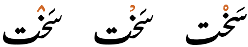
Three alternative shapes of sukun.
This diacritic is never written above the final character in a word, mainly because as a rule a short vowel is not pronounced in this position.
Vowel sounds to characters
This section maps Urdu vowel sounds to common graphemes in the Arabic orthography.
Urdu follows Arabic in using diacritics to express short vowel sounds, but also rarely uses them in normal text. Given the extra phonetic sounds in Urdu, compared to Arabic, the way characters are used to express vowels is much more complicated.
The three short vowels are not typically found in final position. Vowel diacritics are shown here, but are not normally shown in Urdu text.
The columns run right to left and indicate typical word-initial, word-medial, and word-final usage. The joining forms shown are illustrative; alternative shapes may occur (see joining_forms).
Click on a grapheme to find other mentions on this page (links appear at the bottom of the page). Click on the character name to see examples and for detailed descriptions of the character(s) shown.
The alphabet standardised in 2004 by the National Language Authority in Pakistan counts 39 letters, and 18 digraphs representing aspirated consonants. Follow the links to the character notes for the letters described below to find examples and detailed information.
There are 3 letters for s, and 4 for z, due the retention of Arabic spelling for words of Arabic origin. The most common letter for s is س [U+0633 ARABIC LETTER SEEN], and for z is ز [U+0632 ARABIC LETTER ZAIN].
Urdu does have word-initial consonant clusters, but there are no special mechanisms in the script and they are handled like other clusters.
سواگت
کیا
Finals
Apart from nasalisation, Urdu has no special mechanisms for handling syllable- or word-final consonants.
اینٹ
برکها
Consonant clusters
Clusters of consonants are not usually marked in any way, but can be marked, if needed, using a diacritic called jazm. See novowel for more details.
انش
بالکل
Consonant length
ّ
Most native consonants may be lengthened, but not bʱ, ɽ, ɽʱ, or ɦ. Geminate consonants are always medial and preceded by one of ə, ɪ, or ʊ.whp,#Consonants
In vowelled text, which is very rare, this is shown using the diacritic 0651, called taʃdiːd, eg.
ستّر
More often than not, this is not written.
Arabic definite article
The pronunciation of ال (alif followed by lām) varies when it represents the Arabic definite article. This affects many words in Urdu that have come from Arabic, in
particular names and adverbial expressions.
The lām is not pronounced if it precedes one of the following characters:
ت␣ث␣د␣ذ␣ر␣ز␣س␣ش␣ص␣ض␣ط␣ظ␣ل␣ن
Instead, the following sound is doubled. A tašdīd may sometimes be
used to indicate this. Example: السلام علیکم
Often the alif is not pronounced after a short preceding word that ends in a vowel. If the preceding vowel
was long, it is shortened in this process. Examples: بالکلفی الحال
Often the vowel is pronounced ʊ, eg. دارالحکومت
Consonant sounds to characters
This section maps Urdu consonant sounds to common graphemes in the Arabic orthography.
Click on a grapheme to find other mentions on this page (links appear at the bottom of the page). Click on the character name to see examples and for detailed descriptions of the character(s) shown.
Sounds listed as 'infrequent' are allophones, or sounds used for foreign words, etc.
Stops
p
067E
پانی
067E067E067Eـ
b
0628
بہت
062806280628ـ
t
062A
تین
062A062A062Aـ
0637 in words of Arabic origin.
خطوط
063706370637ـ
d
062F
دو
062F062Fـ
ʈ
0679
ٹانگ
067906790679ـ
ɖ
0688
انڈا
06880688ـ
k
06A9
کتا
06A906A906A9ـ
ɡ
06AF
گردن
06AF06AF06AFـ
q
0642
قلم
064206420642ـ
... aspirated
pʰ
067E 06BE
پھل
067E 06BE067E 06BE067E 06BEـ
bʱ
0628 06BE
بھاری
0628 06BE0628 06BE0628 06BEـ
tʰ
062A 06BE
بھاری
062A 06BE062A 06BE062A 06BEـ
dʱ
062F 06BE
دھول
062F 06BE062F 06BE062F 06BEـ
ʈʰ
0679 06BE
ٹھنڈا
0679 06BE0679 06BE0679 06BEـ
ɖʱ
0688 06BE
ڈھيٹھ
0688 06BE0688 06BE0688 06BEـ
kʰ
06A9 06BE
کھانا
06A9 06BE06A9 06BE06A9 06BEـ
ɡʱ
06AF 06BE
گھاس
06AF 06BE06AF 06BE06AF 06BEـ
Affricates
t͡ʃ
0686
چار
068606860686ـ
d͡ʒ
062C
جانور
062C062C062Cـ
... aspirated
t͡ʃʰ
0686 06BE
چھوٹا
0686 06BE0686 06BE0686 06BEـ
d͡ʒʱ
062C 06BE
جھیل
062C 06BE062C 06BE062C 06BEـ
Fricatives
f
0641
سفید
064106410641ـ
v
0648, as an allophone of ʋ.
ورت
06480648ـ
s
0633
سورج
063306330633ـ
0635 in words of Arabic origin.
صابُن
063506350635ـ
062B in words of Arabic or Persian origin.
ثابت
062B062B062Bـ
z
0632
نزدیک
063206320632ـ
0630
جذبہ
063006300630ـ
0636 in words of Arabic origin.
ضِد
063606360636ـ
0638 in words of Arabic origin.
ظَاہِر
063806380638ـ
ʃ
0634
بارش
063406340634ـ
ʒ
0698
ژالہ
06980698ـ
x
062E
خون
062E062E062Eـ
ɣ
063A
غُلام
063A063A063Aـ
ɦ
06C1
ہڈی
06C106C106C1ـ
062D in words of Arabic origin.
حَاکِم
062D062D062Dـ
Nasals
m
0645
مچھلی
064506450645ـ
n
0646
ناک
064606460646ـ
ɳ
0646
گنیش
064606460646ـ
ɲ
0646 06CC 0652 0627
0646 06CC 0652 06270646 06CC 0652 0627ـ
ŋ
0646
انگلی
064606460646ـ
Other
ʋ
0648
توچا
06480648ـ
ʋ
0648 as an allophone of ʋ commonly occuring between a consonant and vowel.
پکوان
06480648ـ
r
0631
اردو
06310631ـ
ɾ
0631 Allophone of r that ends to occur between vowels.
This is one of the few characters in the presentation forms blocks that is valid for use in normal content.
﷽ [U+FDFD ARABIC LIGATURE BISMILLAH AR-RAHMAN AR-RAHEEM] is used by Muslims in various contexts including the constitutions of countries where Islam has a significant presence. The shape varies significantly from font to font and usage to usage.
Other features
Honorifics
A number of combining marks are used with names as honorifics, eg. قاضی نور محمّدؒqɑẑy nvr mhmᵚdؒkaziː nur mamed rahmatulla alayheQazi Nur Muhammad, may God have mercy upon him! They are combining characters that appear over the name at a point chosen by the author.
ؔ␣ؓ␣ؒ␣ؑ␣ؐ
Formatting characters
The Arabic script uses a number of Unicode characters that affect the way that other characters are rendered. Many of those have no visible form of their own. The following set of characters used in Urdu text does have a visual representation.
␣␣␣␣␣
Follow the links to learn more about each of these characters.
Urdu text also makes use of a relatively large set of invisible formatting characters, especially in plain text, many of which are used to manage text direction (see directioncontrols), and others are used to control cursive shaping behaviour (see shapingcontrols).
Encoding choices
In the Urdu orthography different sequences of Unicode characters may produce the same visual result. Here we look at those, and make notes on usage.
Hamza & precomposed characters
Unicode support for the various uses of the hamza is somewhat complicated.u,384 For notes on the usage of the hamza in Urdu, see standalone and izafat.
Canonically equivalent alternatives
A number of combinations with the hamza diacritic can be represented as either an atomic character or a decomposed sequence, where the parts are separated in Unicode Normalisation Form D (NFD) and recomposed in Unicode Normalisation Form C (NFC), so both approaches are canonically equivalent. These include the following:
Urdu uses ی and doesn't use ي because the latter produces dots below in all positions, whereas yeh in Urdu only has dots below in initial and medial forms. However, the canonical decomposition of 0626 maps to the Arabicyeh and a combining hamza.
Nevertheless, the atomic character is widely used in Urdu text. To mitigate the issues, the Unicode Standard recommends that any time ي is combined with a hamza the font should drop the dot glyphs. This ensures that the text looks correct in decomposed form, but applications need to be aware that decomposed text will contain an Arabic yeh which is not otherwise used for Urdu.
Glyphs that are not canonically equivalent
The following alternatives are not converted to each other during normalisation. The precomposed characters represent letters in languages such as Pashto, Ormori, and Adamawe Fulfulde where the hamza is an ijam (ie. part of the letter) rather than a combining diacritic. These precomposed characters are therefore not appropriate for use with Urdu.
The decomposed forms are recommended for use with Urdu. However, if the font supports them, both approaches may yield exactly the same result when displayed, so applications will need to recognise both precomposed and decomposed alternatives as the same grapheme in case users use the precomposed character. Input mechanisms, on the other hand, can produce one rather than the other, and that choice should be made with advisement.
Confusables & spelling errors
The following lists some common errors found in Urdu text due to the similarity of Unicode characters, or perhaps sometimes due to problems inputting the correct character. Wikipedia is a rich source of such.
The Arabic YEH doesn't drop the dots below in isolate and final positions. As mentioned above, ي [U+064A ARABIC LETTER YEH] is only found in decomposed text representing yeh with a hamza; in those circumstances the font should not display the dots below.
Common fonts tend not to show the difference between these two characters, but the ability to search and compare text is impaired unless the application is aware of and takes counter-measures against this substitution.
The function of this glyph is that of the sukun, so the correct semantic character should be used. Although ٛ [U+065B ARABIC VOWEL SIGN INVERTED SMALL V ABOVE] looks like the Urdu jazm, as described in the name of the character, it was introduced to Unicode to serve as a vowel sign for African languages §.
Observation: In the Noto Nastaliq Urdu and SIL Awami Nastaliq fonts the sukun is automatically displayed with the inverted-v shape if the language of the content is declared to be Urdu (ur). It is therefore important to ensure that the language of content is correctly declared for web pages if you expect to see this shape.
Numbers
Urdu may use ASCII digits, or may use the extended arabic-indic digits in the Arabic block.
۰␣۱␣۲␣۳␣۴␣۵␣۶␣۷␣۸␣۹
This is a separate set of characters from those used for Arabic, to accommodate different shaping and directional behaviour. Shapes differ from those of Arabic for the digits 4, 5, and 7.
Persian also uses the same characters for digits, but there are some systematic shape differences between Persian and Urdu for the digits 4, 6, and 7.
Arabic
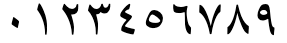
Persian
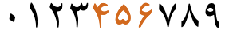
Urdu
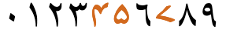
Sindi
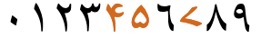
Arabic-indic numerals, as used in Arabic, Persian, Urdu and Sindhi language text.
The percent sign is typed and stored after the numbers. Like the numeric sequences using the ASCII hyphen (mentioned in expressions), it will appear to the left of a number if that number is preceded by Urdu characters. However, if the percentage appears alone or at the beginning of a line it is necessary to use an ALM formatting character just before it to prevent the sign appearing on the right.
Observation:Wikipedia uses an ASCII percent sign with ASCII digits
Number sign
Urdu has a sign [U+0600 ARABIC NUMBER SIGN] which can be used to indicate a number. As shown in fig_number_sign, its length varies with the number of digits in the number.
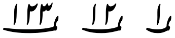
The Arabic number sign runs below the numbers it is used with.
To use this sign, type it before the digits. Even though it displays beneath the digits, it is a formatting character, and not a combining mark.
Dates
؍␣ء␣ھ␣␣
Dates in Urdu may be based on the Gregorian calendar or the Hijri calendar. Dates in the Gregorian calendar are followed with this word (usually represented by the abbreviation ء [U+0621 ARABIC LETTER HAMZA]):عیسویʿysvyiːsviːChristian Era
Dates may also be indicated by placing the long sweep of [U+0601 ARABIC SIGN SANAH] below the year digits.
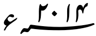
An Urdu date (2014), with a SANAH sign running below it, and a hamza to indicate the Gregorian calendar.
Like the number sign, SANAH is typed before the digits (see fig_sanah). It is not a combining character, even though it displays beneath the digits. The length of the symbol may vary according to the number of digits. It is terminated by a non-digit character.
[U+0604 ARABIC SIGN SAMVAT] is another subtending mark, intended to indicate a year in the Śaka calendar.
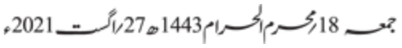
The date in a newspaper masthead, showing the date separator between date and month name in two calendars.
Text direction
Urdu is written horizontally and right-to-left in the main, but (as with most RTL scripts) numbers and embedded LTR script text are written left-to-right (producing 'bidirectional' text).
رکھتا ہے اور 2009ء میں UEFA کپ کے
Urdu words are read right-to-left, starting from the right of this line, but numbers and Latin text are read left-to-right.
The Unicode Bidirectional Algorithm automatically takes care of the ordering for all the text in fig_uefa, as long as the 'base direction' is set to RTL. In HTML this can be set using the dir attribute, or in plain text using formatting controls.
If the base direction is not set appropriately, the directional runs will be ordered incorrectly as shown in fig_bidi_no_base_direction.
رکھتا ہے اور 2009ء میں UEFA کپ کے
رکھتا ہے اور 2009ء میں UEFA کپ کے
The exact same sequence of characters with the base direction set to RTL (top), and with no base direction set on this LTR page (bottom).
Unicode provides a set of 10 formatting characters that can be used to control the direction of text when displayed. These characters have no visual form in the rendered text, however text editing applications may have a way to show their location.
More recently, the Unicode Standard added a set of characters which do the same thing but also isolate the content from surrounding characters, in order to avoid spillover effects. They are [U+2067 RIGHT-TO-LEFT ISOLATE] (RLI), [U+2066 LEFT-TO-RIGHT ISOLATE] (LRI), and [U+2069 POP DIRECTIONAL ISOLATE] (PDI). The Unicode Standard recommends that these be used instead.
There is also [U+2068 FIRST STRONG ISOLATE] (FSI), used initially to set the base direction according to the first recognised strongly-directional character.
[U+200F RIGHT-TO-LEFT MARK] (RLM) and [U+200E LEFT-TO-RIGHT MARK] (LRM) are invisible characters with strong directional properties that are also sometimes used to produce the correct ordering of text.
A sequence of numbers separated by hyphens (for example a range) runs from right to left in Urdu.
fig_range shows some Urdu text, which is right-to-left overall, containing a numeric range that is also ordered RTL, ie. it starts with 100 and ends with 999.
100–999 تصدیق شدہ کیس
A numeric range in Urdu language text.
When a list uses the ASCII hyphen as a separator, the Unicode Bidirectional Algorithm automatically produces the expected ordering only when a sequence or expression follows Urdu characters. However, a sequence that appears alone on a line will be ordered left-to-right. To make the sequence read right-to-left you should, in this case, add the formatting character [U+061C ARABIC LETTER MARK] (ALM) at the start of the line (see and click on each line in fig_ALM).
10-01-2018
10-01-2018
A numeric date alone on a line of RTL text, with ALM before it (top), and without (bottom). (Click on each line to see the code points.)
Note that the required order cannot be achieved by simply setting the base direction, nor by using [U+200F RIGHT-TO-LEFT MARK].
Alternatively, you could use a different separator, such as – [U+2013 EN DASH] (as in fig_range) or ‐ [U+2010 HYPHEN]. No special arrangements are then necessary.
Similar RTL ordering is applied to numbers in equations, such as 1 + 2 = 3, for Urdu language text.
This section brings together information about the following topics:
writing styles;
cursive text;
context-based shaping;
context-based positioning;
baselines, line height, etc.;
font styles;
case & other character transforms.
The orthography has no case distinction, and no special transforms are needed to convert between characters.
Font styles
Urdu is normally written in a nasta'liq writing style. Key features include a sloping baseline for joined letters, and overall complex shaping and positioning for base letters and diacritics alike. There are also distinctive shapes for many glyphs and ligatures.
مستحق • شخص • کیفیت
Sloping baselines and complex joining behaviours in Urdu nastaliq text.
This is achieved in Unicode by applying the correct font – the underlying characters used are not different for nasta'liq vs. other styles.
کوئی شخص محض حاکم کی مرضی پر اپنی قومیت سے محروم نہیں کیا جائے گا اور اس کو قومیت تبدیل کرنے کا حق دینے سے انکار نہ کیا جائے گا۔
Urdu is normally written in the nasta'liq writing style.
کوئی شخص محض حاکم کی مرضی پر اپنی قومیت سے محروم نہیں کیا جائے گا اور اس کو قومیت تبدیل کرنے کا حق دینے سے انکار نہ کیا جائے گا۔
The same text, written in a standard naskh writing style.
Not only does the baseline slope for connected glyphs in a word, but the sloping sequences can overlap, as shown in fig_overlap, which uses the Awami Nastaliq font.
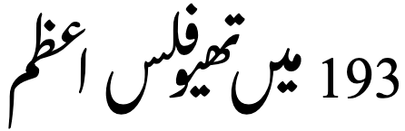
Sloping baselines and complex joining behaviours in Urdu nastaliq text.
Cursive script
Arabic script joins letters together. Fonts need to produce the appropriate joining form for a code point, according to its visual context. This results in four different shapes for most letters (including an isolated shape). The highlights in fig_cursive below show the same letter, ع[U+0639 ARABIC LETTER AIN], with two different joining forms.
A few Arabic script letters only join on the right-hand side.
There are 2 Unicode blocks containing Arabic presentation forms: these contain individual characters corresponding to the various joining forms and ligatures. With only a handful of exceptions, characters in those blocks should not be used for text content; they are only for managing legacy encodings. Instead, characters in the main Arabic block should be used, and the font will manage the necessary cursive shaping.
Cursive joining forms
Most dual-joining characters add or become a swash when they don't join to the left. A number of characters, however, undergo additional shape changes across the joining forms. fig_joining_forms and fig_right_joining_forms show the basic shapes in Urdu and what their joining forms look like.
Two pairs of characters in the first table have base shapes that are identical, but they manage the dots differently in different joining forms. These have been put onto separate rows.
isolated
right-joined
dual-join
left-joined
Urdu letters
ب
ـب
ـبـ
بـ
ب␣ت␣ث␣پ␣ٹ
ن
ـن
ـنـ
نـ
ن
ں
ـں
ـںـ
ںـ
ں
ق
ـق
ـقـ
قـ
ق
ف
ـف
ـفـ
فـ
ف
س
ـس
ـسـ
سـ
س␣ش
ص
ـص
ـصـ
صـ
ص␣ض
ط
ـط
ـطـ
طـ
ط␣ظ
ک
ـک
ـکـ
کـ
ک␣گ
ل
ـل
ـلـ
لـ
ل
ہ
ـہ
ـہـ
ہـ
ہ␣ۂ
ھ
ـھ
ـھـ
ھـ
ھ
م
ـم
ـمـ
مـ
م
ع
ـع
ـعـ
عـ
ع␣غ
ح
ـح
ـحـ
حـ
ح␣خ␣ج␣چ
ی
ـی
ـیـ
یـ
ی
ئ
ـئ
ـئـ
ئـ
ئ
Joining forms for shapes that join on both sides.
isolated
right-joined
Urdu letters
ا
ـا
ا␣آ
ر
ـر
ر␣ڑ␣ز␣ژ
د
ـد
د␣ڈ␣ذ
و
ـو
و␣ؤ
ے
ـے
ے
Joining forms for shapes that join on the right only.
Managing glyph shaping
[U+200D ZERO WIDTH JOINER] (ZWJ) and [U+200C ZERO WIDTH NON-JOINER] (ZWNJ) are used to control the joining behaviour of cursive glyphs. They are particularly useful in educational contexts, but also have real world applications.
ZWJpermits a letter to form a cursive connection without a visible neighbour. It can be used for illustrating cursive joining forms, eg. ان س ان Characters from the Presentation Forms blocks in Unicode should not be used in such cases.
ZWNJprevents two adjacent letters forming a cursive connection with each other when rendered, eg. انسان
͏ [U+034F COMBINING GRAPHEME JOINER] is used in Arabic to produce special ordering of diacritics. The name is a misnomer, as it is generally used to break the normal sequence of diacritics.
Context-based shaping & positioning
Context-based shaping is everwhere in Urdu due to the combination of the cursive behaviour of the script plus the strong tendency to arrange joined characters in cascades or vertical arrangements.
As in Arabic, lam followed by alef ligates, eg. اسلام and there are other such commonly ligated forms. There are also common rules about special joining arrangements when certain characters appear side by side, for example a KA followed by an ALEF takes the special shape کا
Positioning of cursive joining forms is already complicated in the nastaliq style because of the vertical placement; adding dots and hamzas then complicates matters in that they need to be aligned with the appropriate base character without overlapping adjacent character glyphs or other dots, etc. Positioning vowel diacritics, shadda, etc. then adds to the complexity.
The table in fig_gpos selects just a handful of situations to illustrate the kinds of positioning that take place.
nastaliq
naskh
notes
A
حیثیت
حیثیت
A relatively straightforward arrangement, except for the positioning (and context-based shaping) required to achieve the sloping baseline.
B
ویکیپیڈیا
ویکیپیڈیا
Here, the dots have been arranged vertically so that they don't crash into each other. More radical arrangements of this kind will be seen in the following examples.
C
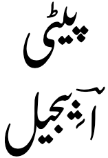
پیٹی اؔبِیجیل
A similar situation, where additional horizontal and vertical spacing has been applied in order to allow room for the dots and other diacritics to appear without crashing into other glyphs or dots, etc.
D
چاہیئے
چاہیئے
It is common for diacritics of characters preceding BAREE HEH to be rendered below the latter character's glyph. Here we see part of both an initial HEH and the 2 dots of aYEH separated from the other glyphs that make up those characters.
E
تصدیق
تصدیق
In this word, the 2 dots below the YEH create most of the horizontal space between the preceding DAL and following QAF. In the Nafees Nastaleeq font, the 2 dots are moved below and slightly under the QAF, reducing the overall horizontal with of the word.
F
اسلام
اسلام
Note the convention that the word-final MEEM here starts above the baseline, even though nothing follows it.
G
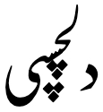
دلچسپی
A highly vertical arrangement using the Nafees Nastaleeq font, where dots are stacked together. In the Awami and Noto nastaliq fonts this looks less vertical, ie. دلچسپی
Examples of glyph positioning in the nastaliq style.
Letterform slopes, weights, & italics
tbd
Graphemes
Grapheme clusters
tbd
Punctuation & inline features
Word boundaries
Words are separated by spaces.
Phrase & section boundaries
،␣؛␣:␣۔␣.␣؟␣!␣؎␣؏
Urdu uses a mixture of ASCII and Arabic punctuation.
Urdu text using an Arabic comma, and an Arabic full stop.
Poetry
In poetry, ؎ [U+060E ARABIC POETIC VERSE SIGN] is used to mark the beginning of poetic verse, and ؏ [U+060F ARABIC SIGN MISRA] is used to indicate a single line (misra) of a couplet (shayr) from an Urdu poem, when quoted in text. It is used at the beginning of the line, and is followed by the line of verse. For more information and examples, follow the links on the character names.
Bracketed text
(␣)
Urdu commonly uses ASCII parentheses to insert parenthetical information into text.
Urdu texts use quotation marks around quotations. Of course, due to keyboard design, quotations may also be surrounded by ASCII double and single quote marks. Note, however, that the order of use is different from that in LTR text, because they are not automatically mirrored.
Basic line-break opportunities occur between the space-separated words.
They are not broken at the small gaps that appear where a character doesn't join on the left.
Breaking between Latin words
When a line break occurs in the middle of an embedded left-to-right sequence, the items in that sequence are rearranged visually so that the reading direction remains top-to-bottom. latin_line_breaks shows how two Latin words are apparently reordered in the flow of text to accommodate this rule.
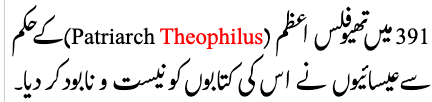
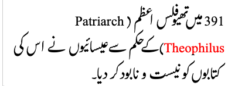
Urdu with embedded Latin text. The lower of these two images shows the result of decreasing the line width, so that text wraps between a sequence of Latin words.
In digital text the rearrangement is automatic. Only the positions of the font glyphs are changed: nothing affects the order of the characters in memory.
Calligraphic justification It is difficult to find information in English about justification of Urdu text in a nastaliq font. The following information is from Asad et al.ma, and is based on studies of calligraphy. It's not clear that it is currently possible to achieve the results described in web pages.
Interword spacing is only used as a last resort for Urdu justification. It is also noteworthy that, unlike it use in Arabic language text,
ـ [U+0640 ARABIC TATWEEL]
is not used, and moreover is not even functional in some fonts. For example, it is completely ignored by Noto Nastaliq Urdu, and while it actually produces a glyph for Awami Nastaliq, it doesn't join with adjacent characters.
According to Asad et al. there are 2 main ways to deal with justification: by stretching certain letter shapes (to increase line width), or by positioning some letters above the word they appear in (to decrease line width). Some of the examples they use, such as fig_justification include both.
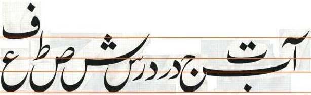
An example of a justified Urdu line from Asad et al.
The rules about which letters can be stretched or repositioned, and when, and how, are somewhat complex. For some additional detail, see Asad et al, page 594ff (page 4 in the PDF). Some letters are never stretched, and others only stretched in certain positions within a word. Given those constraints, it is then necessary to apply rules about which of the set of available letters to stretch within a word and across a line in order to achieve the desired line length.
Other rules or judgement calls are also involved.
Variations in stroke thickness between adjacent letters contribute to decisions about how to stretch letters.
In some contexts, such as poetry, all lines may be stretched at the same location in the line.
Given that there is usually only one stretched letter per word, certain letters are prioritised over others for stretching, based on how commonly they are stretched.
The last line in a paragraph of ordinary text is never normally stretched, however a final line in a poem is likely to be stretched.
Newspaper justificationfig_justification_newspaper shows part of a column from a newspaper. The majority of columns in the newspaper are fully justified, but don't employ the stretching and positioning techniques described just above. Instead, they appear to use inter-word spacing. Note that very little spacing tends to be needed, given that Urdu words are usually short and the diagonal baseline and glyph shaping tend to further reduce the amount of horizontal space taken by a word. This means that it is relatively easy to fit approximately the right number of words on a line before applying the additonal spacing needed.
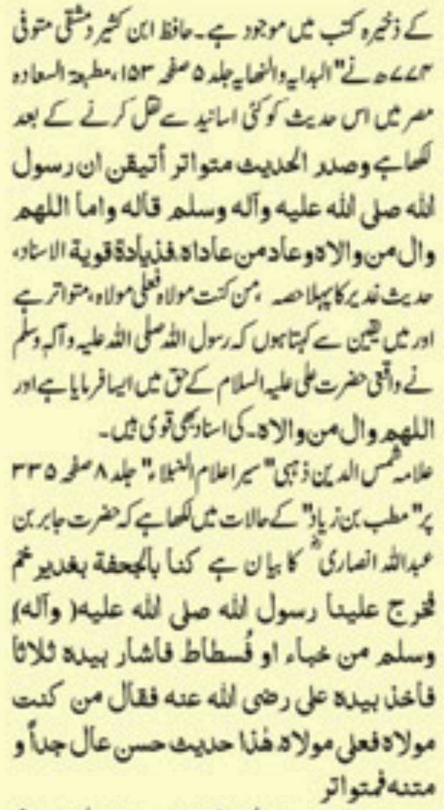
An example of a fully justified column of Urdu newspaper content.
Text spacing
tbd
This section looks at ways in which spacing is applied between characters over and above that which is introduced during justification.
Complex, two-dimensional arrangements of letters in words are common in newspaper titles. See fig_newspaper_titles. They are normally created by hand.
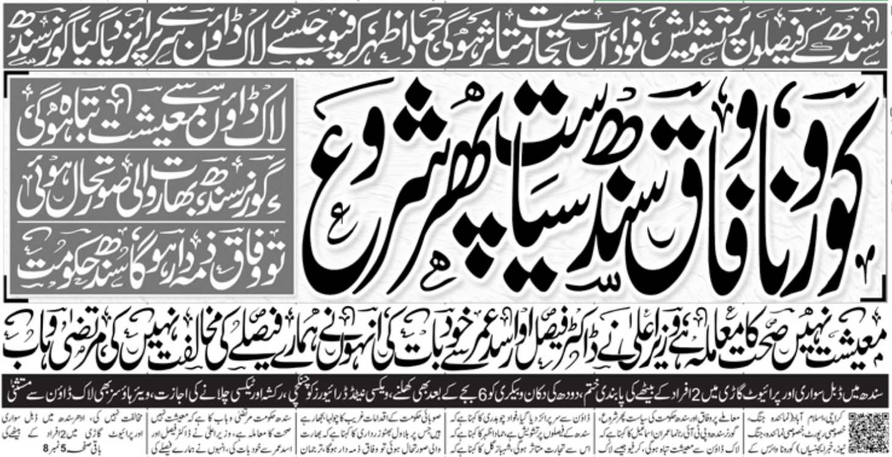
Complex arrangements of characters in a newspaper heading.
Baselines, line height, etc.
The alphabetic baseline is a strong feature of Arabic script on the whole, since characters tend to join there. The nastaliq style of the script, on the other hand, uses arrangements of joined glyphs that cascade downwards from right to left, and ressemble a strongly sloping baseline. See the examples in fig_baseline and fig_gpos.
fig_overlap shows overlapping baselines in the Nafees Nastaliq font. (In the Awami and Noto fonts, there is no overlap for that text.)
This cascading effect can lead to a need for quite large line height settings, compared to many other orthographies.
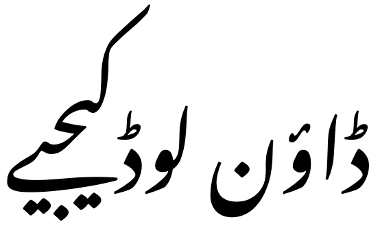
An example of a cascade that requires a large line height.
fig_baselines shows Urdu text glyphs from the Noto Serif and Noto Nastaliq Urdu fonts compared to the basic metrics of Latin text. The figure clearly shows the potential differences in line height requirements for the two scripts.
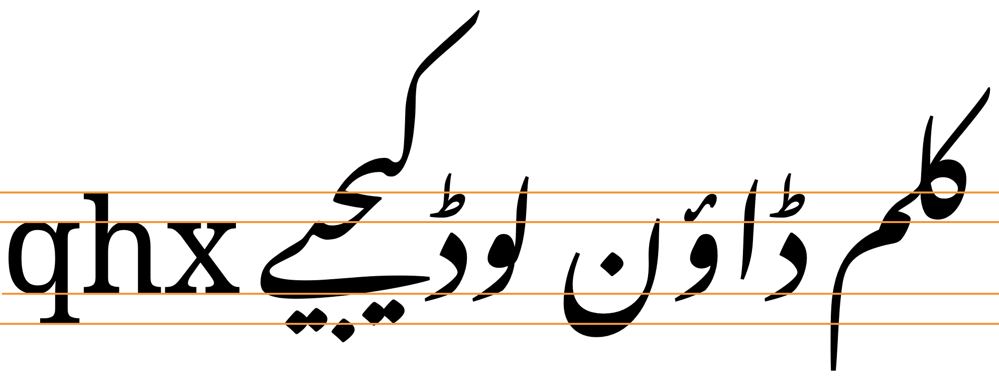
Font metrics of Latin text the Noto Serif compared with text in the Noto Nastaliq Urdu font. Both fonts have the same font size.
Counters, lists, etc.
tbd
Styling initials
tbd
Page & book layout
This section is for any features that are specific to Urdu and that relate to the following topics:
general page layout & progression;
grids & tables;
notes, footnotes, etc;
forms & user interaction;
page numbering, running headers, etc.
Notes, footnotes, etc
[U+0602 ARABIC FOOTNOTE MARKER] is used to indicate that a number is a reference to a footnote. The number sits above the symbol, although this is not a combining character. The marker should come before the number in logical order, eg. ؎۵.


 [
[ [
[ [
[ [
[ [
[ [
[ [
[ [
[ [
[ [
[ [
[ [
[ [
[